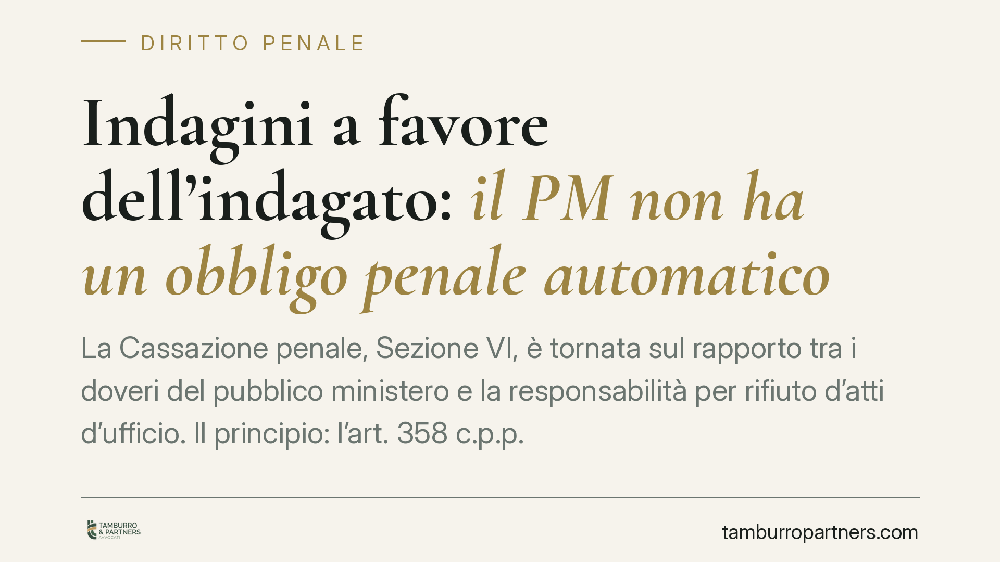

Indagini a favore dell'indagato: il PM non ha un obbligo penale automatico
La Cassazione penale, Sezione VI, è tornata sul rapporto tra i doveri del pubblico ministero e la responsabilità per rifiuto d'atti d'ufficio. Il principio: l'art. 358 c.p.p. impone la completezza delle indagini, ma non l'obbligo di compiere ogni singolo atto integrativo. La scelta resta discrezionale e, di per sé, non integra il reato previsto dall'art. 328 c.p. Un chiarimento che pesa sulla strategia difensiva.

Il caso
La vicenda trae origine dal noto procedimento Eni-Nigeria, in cui a due magistrati della Procura di Milano — Fabio De Pasquale e Sergio Spadaro — era stata contestata l'ipotesi di rifiuto d'atti d'ufficio (art. 328 c.p.), in relazione alla presunta omessa acquisizione di elementi ritenuti favorevoli agli imputati.
La Sezione VI penale della Cassazione ha escluso la sussistenza del reato, confermando l'assenza di responsabilità penale dei magistrati. Il punto giuridico centrale riguarda l'esatta portata del dovere che l'art. 358 c.p.p. pone in capo al pubblico ministero.
> Nota sui riferimenti: il numero e l'anno della sentenza vanno verificati sulla fonte ufficiale (Cass. pen., Sez. VI, sent. n. da riscontrare). Si invita a controllare la numerazione presso i canali istituzionali prima di ogni utilizzo.
Inquadramento normativo
L'art. 358 c.p.p. stabilisce che il pubblico ministero "svolge altresì accertamenti su fatti e circostanze a favore della persona sottoposta alle indagini". La norma esprime un principio di completezza: l'indagine non deve orientarsi in senso esclusivamente accusatorio, ma deve dare conto anche degli elementi favorevoli all'indagato.
Altra cosa, però, è ricavare da questo dovere l'obbligo di compiere ogni possibile atto istruttorio integrativo. La Cassazione distingue nettamente i due piani: il dovere di completezza attiene alla direzione complessiva dell'indagine; la scelta del singolo atto da compiere rientra invece nella discrezionalità valutativa del magistrato.
È su questa distinzione che si gioca l'esclusione del reato. L'art. 328 c.p. punisce il rifiuto o l'omissione di un atto d'ufficio, ma presuppone che l'atto sia dovuto e non discrezionale. Quando l'attività rientra nella sfera di valutazione tecnico-giuridica dell'organo, la mancata adozione di un determinato atto non integra la fattispecie penale, salvo diversi profili di responsabilità disciplinare o civile.
Implicazioni pratiche
Per la difesa il principio ha un duplice risvolto.
Da un lato, ridimensiona l'aspettativa che l'omessa acquisizione di elementi favorevoli si traduca automaticamente in una responsabilità penale del magistrato: la discrezionalità dell'organo inquirente resta un'area ampia.
Dall'altro lato, valorizza gli strumenti che la difesa ha a disposizione fin dalle indagini preliminari. Se il pubblico ministero non è tenuto a compiere ogni atto favorevole, diventa decisivo che sia la difesa a far emergere gli elementi utili all'indagato.
Lo strumento è quello delle indagini difensive disciplinate dagli artt. 391-bis e seguenti c.p.p.: colloqui, ricezione di dichiarazioni, richieste di documentazione alla pubblica amministrazione, accertamenti tecnici. Questi atti confluiscono nel fascicolo del difensore e possono essere depositati per orientare le determinazioni del pubblico ministero o del giudice.
In altre parole: la completezza dell'indagine è un dovere pubblico, ma la ricerca puntuale della prova a discarico è, in concreto, un onere che la difesa non può delegare all'accusa.
Cosa fare in concreto
- Attivare tempestivamente le indagini difensive ex art. 391-bis c.p.p.: gli elementi favorevoli vanno acquisiti dalla difesa, senza confidare in un intervento integrativo del pubblico ministero.
- Formalizzare per iscritto le richieste di atti al pubblico ministero, così da lasciare traccia documentale delle sollecitazioni difensive.
- Conservare in modo ordinato la documentazione raccolta e verbalizzare correttamente colloqui e dichiarazioni, nel rispetto delle forme di legge.
- Valutare con anticipo il momento del deposito degli elementi a discarico, calibrandolo sulla fase processuale più opportuna.
- È opportuno impostare la linea difensiva sin dalle indagini preliminari, quando il quadro probatorio è ancora in formazione.
Conclusioni
La pronuncia consolida un'impostazione già nota: l'art. 358 c.p.p. non trasforma ogni omissione istruttoria in illecito penale. Ne deriva un'indicazione operativa chiara. La tutela degli elementi favorevoli all'indagato passa, in larga misura, dall'iniziativa della difesa e dall'uso pieno delle indagini difensive.
Contributo informativo a cura di Tamburro & Partners - Avv. Giuseppe Tamburro. Non costituisce parere legale.
Ogni condominio ha una storia a sé.
Se gestisci un'amministrazione e vuoi un confronto su una specifica questione condominiale, scrivi allo studio. Ti rispondiamo entro un giorno lavorativo.